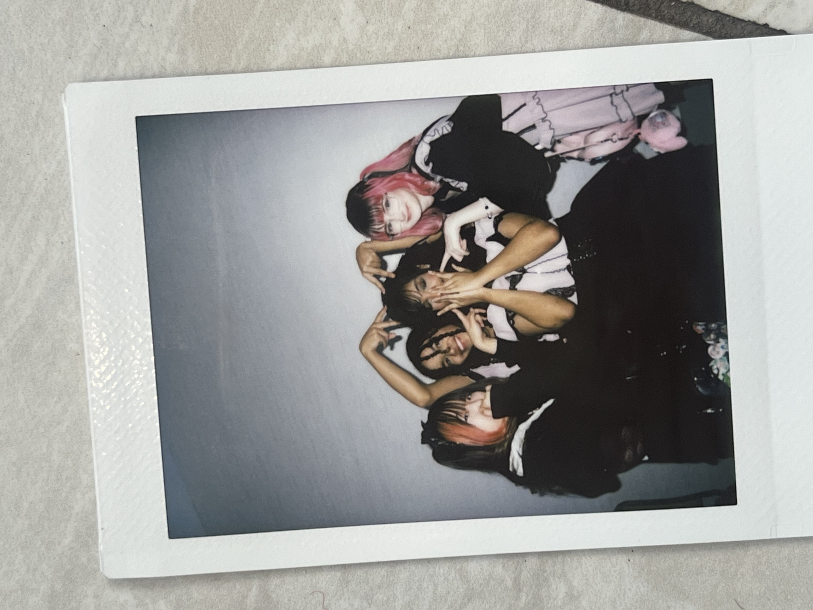
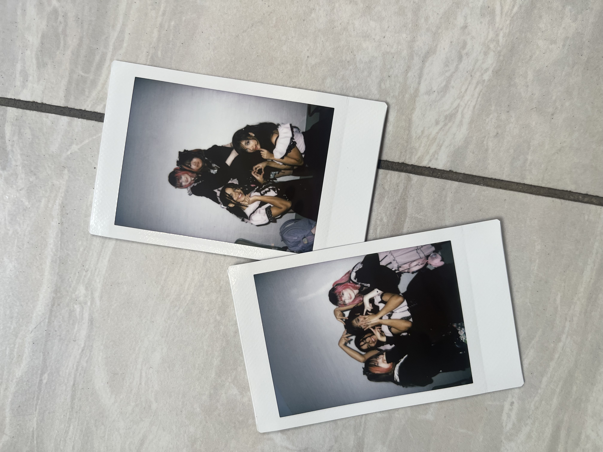
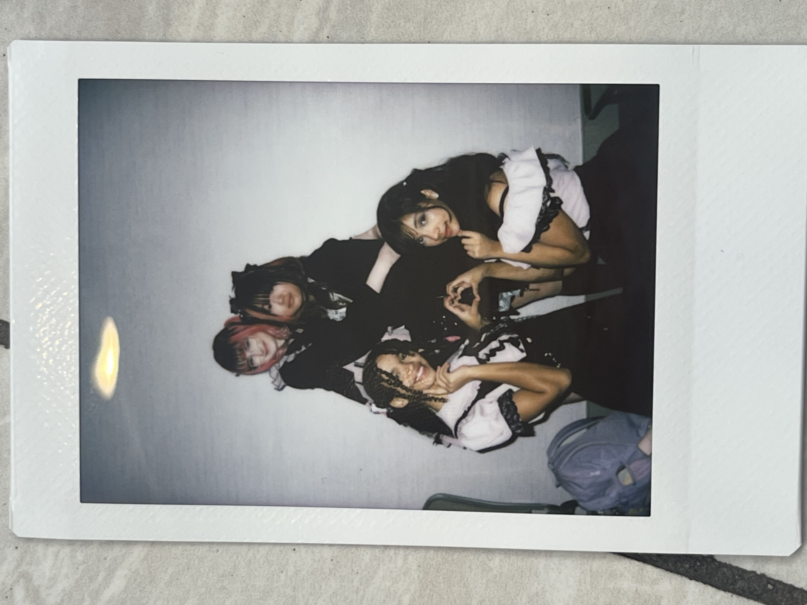

LOVESH♡T!
We are Cupid!˚₊ · »-♡→
a four person idol group
aiming to capture your hearts!
Meet our Members!
JANE
Jane is the founder of cupid and before cupid has
competed as an idol! She holds one award without Cupid and one with!
hi ms hall i got lazy with this one so.yeah

Kaiya
Kailyn

Sinead


